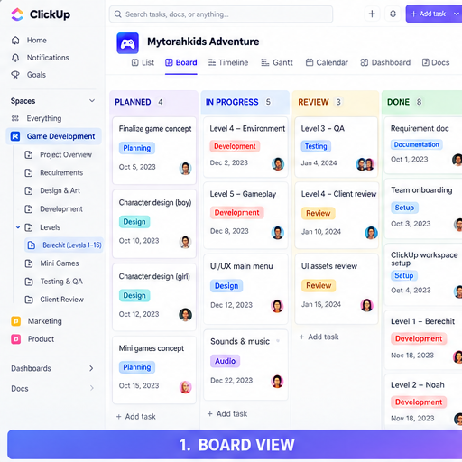
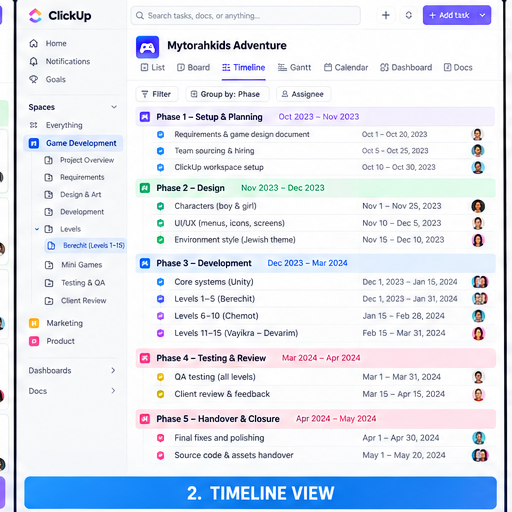
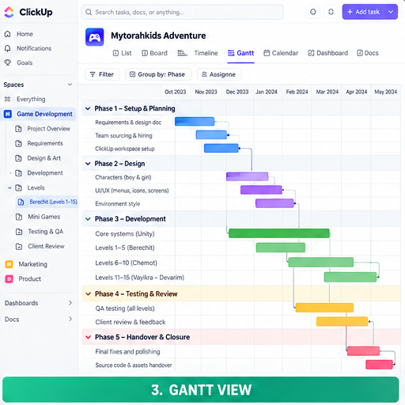
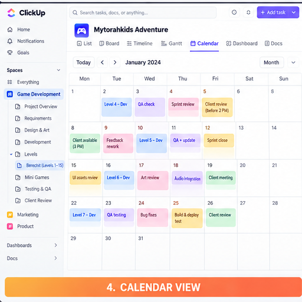
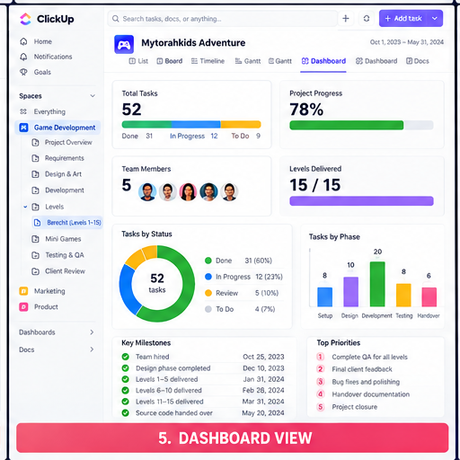
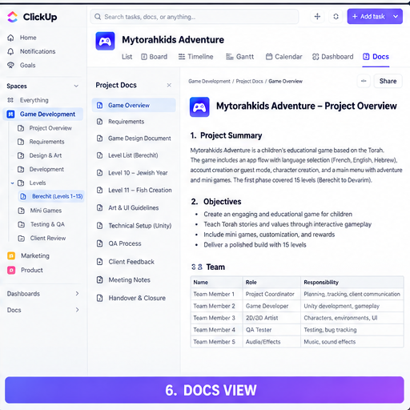

Technical Project Coordination for a multilingual educational game, covering team sourcing, requirements breakdown, dependency management, sprint coordination, QA, client reviews, and source-code handover.
The engagement ran for approximately eight months with a five-person delivery team. Work began with character and UI/UX foundations, followed by level-based Unity development, recurring QA cycles, and client review.
Technical Project CoordinationClickUpUnityWeekly Sprint ReviewsQAClient LiaisonMytorahkids Adventure was designed as a bilingual educational game for children with player flows, tutorials, level selection, mini-games, rewards, customization, and multilingual content. The delivered phase reached Level 15 before the client paused further development due to funding constraints.
I served as the coordination link between the client and delivery team, with responsibility for planning, communication, progress control, QA, and handover.
Approximate eight-month reconstruction based on the confirmed delivery sequence.
Reconstructed ClickUp-style project views showing how delivery work was organized and monitored.






Additional technical delivery work from my project coordination experience.
Mobile alien-invasion horde shooter. Authored the Game Design Document and directed a 3D artist on character and environment assets, while overseeing delivery of two completed levels as the sole client point of contact.
Coordinated backend development for a live client website, directing the developer through the build process and serving as the delivery and quality point of contact.
“Coordinated an approximately eight-month Unity-based educational game project from team sourcing and planning through iterative development, QA, client review, and handover.”